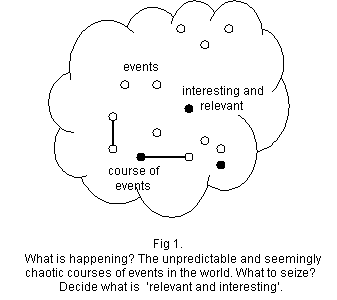
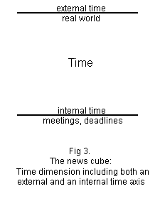
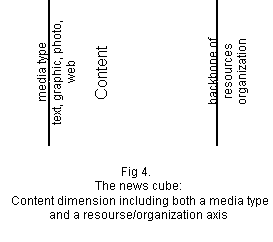
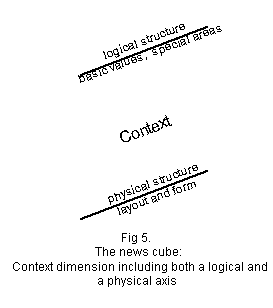
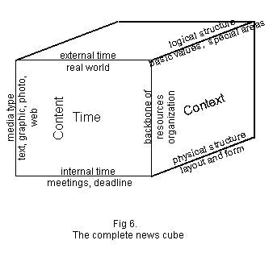
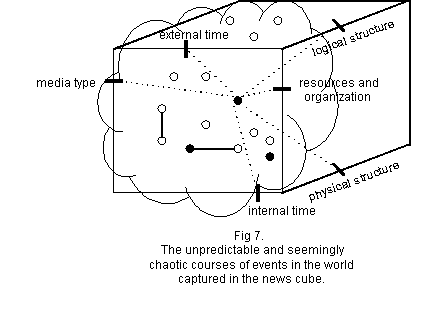

With an objective to elicit implications for new ways of using IT in "the organizing" of editorial work, the empirical study reported in the paper investigates: How do newspaper staff, in their daily organizing of editorial work, know what to do next? The answer to the question is "the news cube," a model covering three dimensions: time, content and context. The news cube suggest the need for "dynamic views" in the organizing of editorial work. Dynamic views are discussed and related to findings from the empirical study.
Keywords: computer supported cooperative work, editorial process, publishing systems, newspaper production, IT use
Editorial work is a highly complex work task, which does not only rely on the unpredictable and seemingly chaotic courses of events in the world, but also the genre, style, etc., of the news provider in question, the organizational resources available, and so on. This fosters a work situation where decisions about who is going to what, when, etc., are made on a frequent and continuous basis. The term organizing has been used to capture the frequent and continuous nature of such decisions
Virtually all traditional news media, such as newspapers, have experienced increased competition lately. The main reason is the emergence of new kinds of news providers, e.g., web site news providers and newsletters delivered by e-mail. To cope with these new conditions, news providers have spent much resources on rendering editorial work more efficient. In the case of newspapers, the majority of efforts has been focusing on the product, i.e., newspaper and its pages, articles, adds, pictures, etc., and not so much on the organizing activities. Clearly, the focus on product has been very successful, bearing in mind the ways in which desktop publishing, page makeup and pagination tools, etc., have improved editorial work. At the same time, if editorial work to a considerable extent is about organizing, which has been documented empirically (Kärreman, 1996), then it would be unfortunate not to explore ways in which it could be improved. This is the rationale for the choice of study object for the research project reported in this paper: the organizing of editorial work.
Existing research on the topic has to a large extent adopted a descriptive knowledge interest (e.g., Kärreman 1996), aiming to produce rich accounts and analyses of the practice of editorial work. Two examples are Gans (1979) and Tuchman (1978), whose empirical explorations of US newspapers resulted in long and detailed ethnographical descriptions. The project presented here differs from this research in that it adopts a constructive knowledge interest. Its objective was innovation of new IT use, i.e., to explore, design, and evaluate new ways of using IT in the organizing of editorial work. The research projects on editorial work that have adopted constructive knowledge interests are very few. Two examples are the project by Kensing and associates (Kensing et al. 1997), which aim to design CSCW support for a Danish radio station and the study by Bellotti and Rogers (1997), which explores the work in US multimedia industries. Both projects elicits some brief implications for design. Accordingly, the approach of the project presented here, i.e., a constructive approach to the organizing of editorial work, is novel.
Even though the objective of our research is not to describe the current state of affairs, we adopted an ethnographic mode of inquiry. One reason was that it has been documented to be very useful in design, another reason that very few research efforts have been devoted to the topic of investigation, especially from a constructive point of departure. Having said that, the way in which we used ethnography differs significantly from how it usually is being applied. In traditional ethnographical research, the detailed documentation of how the everyday practice is experienced from people involved, is usually is the objective per see. In our project, on the other hand, ethnography is "a means to an end," where the end is innovation of new IT use and one means is the detailed empirical investigations of how people currently act in the particular domain of interest.
In this paper, we wish to summarize the results from an empirical investigation conducted in a Swedish newspaper. The research question asked in the empirical work was: How do newspaper staff, in their daily organizing of editorial work, know what to do next? The objective of the paper is, first, to summarize the empirical findings, and second, summarize some preliminary implications for design.
The rest of the paper is structured as follows. The next section introduce a Theoretical background. Section three summarizes The research site and approach and section four describes the empirical Results. In section five we describe the Eliciting Implications for New IT use and in the next section we discuss these based on the research question. In section six, we also introduce related work and points out key questions on how to develop new IT, and section seven, finally, concludes the paper.
In this section we wish to consider "editorial work" and "organizing complex work" in more detail. The objective is to provide a brief theoretical background to the empirical study.
"News is a window on the world." (Tuchman, 1978). We expect our morning newspaper to everyday provide us with such a window and do very seldom reflect upon the work behind it. Editorial work is the range of activities involved in organizing, forming, and planning news services and the production of these. It is a repetitive process where a new product has to be produced and delivered every single day. But it is also a continuous process in that each day's production depends on past issues and is influenced by other news providers. Editorial work is also characterized by unpredictability; the unpredictable and seemingly chaotic courses of events in the world news is often difficult to calculate in advance.
Traditionally, newspaper production involves two stages; original production and copy production. The first stage, also called pre-press, includes two processes: editorial production and advertisement production (Nordqvist, 1996). Besides news stories a newspaper have so called feature pages. The term features encompasses a wide range of non-news content from background articles, horoscopes, cartoons etc. Feature content have a longer time span, often have a specified length and are ready for production earlier than the news material. Advertisement content represent the main source (60%) of income for a average newspaper daily morning newspaper (Nordqvist, 1996). News stories often represents a minor part of the newspaper, measured in number of pages and articles, but still dominates the front-page and the editorial work.
Editorial staff includes reporters, copy editors, photographers, and graphic designers, as well as organizational positions such as policy-makers, top producers (producers), and section heads (Gans, 1979). The trend from "print-oriented" to "multi-channel" publishing has, amongst other, made editorial work increasingly multi-disciplinary, as collaboration between staff is assumed to be crucial to assure high quality. It is furthermore, generally agreed upon in the news paper business that globalization, the Internet, new kinds of news providers, etc., has increased the competition in the business in a radical way.
Increasingly, "organizing" is used to describe the day-to-day activities in organizations; organizing as an ongoing activity rather than a pre-defined organization. Barbara Czarniawska-Joerges (1996) describes 'organizing', as making right things happen at the right time and right people to be in right places at the right time. New ways of organizing is often based on an organic approach assuming that the task uncertainty of the organization is high; unpredictable activities rather than pre-defined and predictable circumstances. Organizations that relies on the informal and direct interactions to achieve co-ordination between individuals and groups. "All actors are supposed to engage actively in decisions making and planning as the activities are performed." (Dahlbom and Mathiassen, 1993)
Editorial work fulfill the main characteristics of what could be described as complex work. Often the 'complex' is used to describe activities that requires people to take action in new and unknown situations rather than following pre-defined instructions (see, Drucker 1993).
In this section we describe the research sites and approach involved in the empirical study.
The empirical work investigates the organizing of editorial work in at two major Swedish newspaper. Both newspapers employ approximately 450 people. Roughly half of these are editorial staff. The main newspaper site, in which we spend most of the time, has a profile of both being a national newspaper and a local newspaper for the capital city. The policy is to depict what is "relevant and interesting."
At the main site, editorial work is separated from the departments handling printing and advertisements. The editorial staff are located mainly in a large, open-plan office space called "the newsroom". There are also a meeting room, called the "long-room," and private offices for special reporters. The newsroom populates a half dozen of editorial units. Each desk is a hub for editorial work.
The editorial staff in both sites used Quark Xpress, a "WYSIWYG based" application for desktop publishing. The hardware infrastructure consisted of Macintosh and PC clients, and UNIX, Windows NT and Macintosh servers. Recently, a new editorial system supporting "the pre-press" process was been implemented in both sites. The system, called Impress, provides the pre-page tool for page planning and layout, the reporter editor for content creation, the Xtension typographic control to Quark Xpress, and the editorial database.
Initially, the project described here used traditional systems development methods. After some time, however, we felt that the traditional methods failed to capture the intensive collaboration in the news sites: they simply seemed to focus on wrong aspects of work. Traditional information systems analysis methods are based on the assumption that what we say we do is what we do. Process-maps, dataflow-diagrams and object-hierarchies are all examples of how we try to conceptualize, visualize and detail results from interviews, seminars and workshops. Users participating in such sessions thus leave their everyday work and workplace, and we ask them to describe for us what, how, etc., they act in different situations. We try to take a photo of the operations from without, using a typical hard system approach, applying hard system thinking to system development (Dahlbom and Mathiassen, 1993).
Because we felt that traditional methods failed to capture the cooperative nature of editorial work, we made the decision to look for alternative approaches. We found that ethnography with its commitment to investigate work practice while being performed, was suitable for our purposes. Observing and analyzing what we do, to explain the ordinary and obvious day to day actions on a very detailed level of analysis.
As pointed out in the introduction we adopts a designer's agenda, our focus is innovation of new IT use and our objective for this study is to obtain a first level of an empirically grounded understanding of the organizing of editorial work to depart from. Against this background, the empirical work reported in this paper cannot, and should not, be compared to the empirical accounts of ethnographers.
Our results is based on a general insight from the organizing of editorial work in two newspaper sites doing interviews and seminars during a period of three months and detailed material from one day of intensive observations.
The research question investigated in the empirical work was: How do newspaper staff, in their daily organizing of editorial work, know what to do next? In this section, we describe the main results from the empirical work. We do so by introducing the three dimensions that summarizes the key issues considered in the organizing of editorial work.
A newsroom in a daily morning newspaper is a deserted and silent landscape in the morning with an almost lazy atmosphere. In the afternoon this changes and the newsroom becomes a crowded and boiling place, with an intensive and almost exciting feeling in the air. We have found it extremely interesting to study this daily change. The editorial staff participated in a number of formal meetings and plenty of more or less informal briefings giving the editorial work a daily rhythm: Todayís meetings enables the organizing and production of tomorrowís newspaper. These meetings and briefings seemed to be important centers of coordination in the organizing of editorial work.
We observed the ongoing discussions in the newsroom, in the meeting
room, in coffee rooms, and in staircases and how newspaper staff
came to important decisions during these discussions. Discussions
on how to classify and value the unpredictable and seemingly chaotic
courses of events in the world, how prioritize the resources available,
and in the end; how to squeeze the ëwindow on the worldí
into tomorrowís newspaper. It was interesting to observe
how many of the decisions taken based upon an intensive discussion
on which events other news providers did chose to describe and
how this influenced which events to seize in their own newspaper
and web-site; What is a ërelevant and interestingí
event? What courses of events influence the world or our view
of the world?

We also noticed that the main part of the newspaper was made up by feature material, produced several days before it was published. News stories represented a minor part of the studied newspaper. Even so, news stories still dominated the discussions and general perception of a daily morning newspaper, and they also gives the main characteristics of an ordinary day in the newsroom.
Another key observation was that the editorial staff spent a lot of time wandering around looking for each other and for pieces of material. They walked between the desk, colleagues, meeting room, fax machine and the Reuter screen. The most intensive discussions took place in the coffee room and in the staircase. In the afternoon then the newsroom become a crowded and boiling place people did not have the time to 'walk more than 20 steps' and in several internal projects they discussed how to optimize the open-plan office to be able to keep up-to-date with things going on, to maintain awareness.
Time, content and context seemed to be the three dimensions around which the ongoing discussions in the studied formal meetings, informal briefings and chats, seemed to spin around. The first and most critical dimension is, of course, time. The time window in a newsroom is small but extremely sharp and clear; the critical balance between external, or real time when events occurred, and the internal time due to deadlines and the formal meetings in the morning and in the afternoon.
When do the press conference occur? When will we decide if we should cover it? When did the ëunexpectedí take place? When can we cover it? When can it be published? Will that article be ready before deadline? Can we cover the late press conference in the second edition?
The second dimension is content. Including the media types available, often complemented with policies for each media, outspoken or unspoken, and also the production of content; writing, photographing, illustrating and editing. The content production done by the editorial staff and other resource inside or outside the organizational structure of the newspaper.
How will we cover it; text, photographs, graphics? How will we publish it; in print, or only on the web.? What is our ambition with photographic material? Who will write the article? Our own reporters, photographs, or freelance? Which reporters are available? Which editorial unit should cover that press conference? Do we have resources to cover it? Can we use an Reuter wire instead?
The third dimension we identified was context. A newspaper represent in it self a context, the readership values what they read partly depending on which newspaper. Context, both in a logical perspective; what basic values, domains, and policies, and physically; expressed in the newspaper structure, form and layout rules etc.
What should be covered in this section of the newspaper? Is this 'relevant and interesting'? How can we give this event, trend, catastrophe, etc. a background, explanation, etc.? What can we relate this to, to make it understandable for the readership? Is this realty part of our specialist domains? We do need something to lighten up first page of the section!
Together these three dimensions summarizes our the empirical findings, capturing the important factors influencing the organizing of editorial work.
In this section we make some suggestions of new IT use based on the empirical investigation. We do so by introducing "the news cube," dynamic views supporting the organizing of editorial work.
During the study a simple three dimensional model has evolved:
The news cube, based on the dimensions identified during
the empirical work. Three dimensions; time, content and context,
including six important axis or perspectives. New IT use, supporting
the organizing of editorial work, should offer intelligent and
dynamic views "into the news cube".
The time dimension has two parallel axis; external time
or real time, and internal time, daily deadlines and meeting-cycle.

Content have a Media type axis depicting which media types are available and a parallel axis symbolizing the content production or Backbone of resources and organization.

Context have a logical structure axis, represented by basic values, domains, and policies, and a physical structure axis, expressed in the newspaper form and layout rules etc..

Together these three dimensions and six axis summarizes our understanding
the important factors influencing the organizing of editorial
work of editorial work. The unpredictable and seemingly chaotic
courses of events in the world could be related to the three dimensions
and positioned in the co-ordinate system build up by the six axis.

Each event happens at a given external or real time, it could
be decided and published due to internal meetings and deadlines.
An event could be classified as part of one of the special areas
covered in the newspaper, and evaluated as relevant and interesting
based upon the basic values in the newspaper policy. Here we have
summarized this discussion as the logical axis of the context
dimension. To depict and explain an event an important decision
is to decide how it should be covered, in which media types; just
a short Reuter article or a more extensive text article including
a photograph. To produce that content in the decided media types
resources must be allocated in the organization.

Two scenario describing how new IT use could include intelligent and dynamic views based on the different axis in the news cube. Offering different actors their perspective, their views "into the news cube".
First a scenario, based on a case from our observations but extended with our own fantasy, to describe how new IT use could offer pro-active opportunities in organizing editorial work:
President Jeltisin is visiting Stockholm next week. This has been included as a future event that we should depict, indeed, being 'relevant and interesting' in several of the aspects that are our main domains: Foreign Affairs, Security Politics, Domestic etc. In the morning meeting, this event was marked with a to-decided-icon on the 'electronic white-board'. We discussed how to cover this event and we decided that Robert working at the Domestic desk should co-ordinate this assignment and we directly linked that event to these dates and to the Domestic desk by drag-and-drop and marked Robertís name as responsible and added a new follow-up date.
Next day Robert, reading his 'to-do-list' on his PDA, writes down a couple of ideas on how to cover this event. Including a big illustration of President Jeltsinís traveling around Stockholm during the visit. He discuss it with one of the illustrators and they decide to include this illustration in a two page spread. When connecting his PDA to the editorial system, Robert ask if it is OK to allocate two pages in the planned paper that date, connect this illustration to the illustrators 'to-do-list' with a defined deadline.
Robert continues his work, but we leave him there and change the time axis several months ahead to se how new IT use could offer a more re-active support using dynamic views.
President Jeltsin is operated for his heart problems and a Reuter wire says that he is having serious problems after the operation. The wire arrives half an hour after the deadline. Peter who is working that evening is typing in a simple search for Jeltsin, finds a photograph on a tired Jeltsin from his Stockholm visit and writes a headline for the web-site with this photograph and after a discussion with a colleague he also add a link to the illustration of Jeltsin's traveling program that he found. When Peter says OK-publish he confirms that this is an event classified as a news concerning the domains; Foreign Affair and Security Politics, but exclude Domestic from the list. One day later a free-lance reporter writes a background article describing the consequences for the balance in the world and the editor decide that this is article should be classified as feature-material-having-a-news-connection and as part of the Security Politics domain. He also allocated space for the article on the Foreign Affairs first page next Sunday marked. Next Friday this article is one item on the list on the 'electronic white-board' in the meeting but with a question-mark-icon. But since President Jeltsin seems to recover, this is not an 'relevant and interesting' topic anymore. It is deleted from the list but is still stored in the database, but marked with unpublished.
In the introduction we formulated the following research question How do newspaper staff, in their daily organizing of editorial work, know what to do next? In this section we use this question to discuss the results from the empirical investigation and the elicited implications for new IT use. We introduce related work and points out key questions on how to develop new IT use based on the news cube.
In the seventies, sociologists like Herbert Gans (1979) and Gaye Tuchman (1978) wandered into U.S. newsrooms to ask a simple question: How is the news made? Their studies are extensive and descriptive ethnographic works of high relevance for our study even though they are more than twenty years old. Nowadays, when the traditional daily newspaper is one of several media for news publishing, when mass-media publications evolves to personalized services, and when newsrooms have become highly computerized work settings, we wanted to know who has asked the same question: How is the news made, now in the nineties?
Belotti and Rogers have in a study (1997) identified a lack of literature and studies focusing on current work practices and how technology is used for collaboration in settings such as a newspaper. Their study fills that gap to some extends and it reports on an extensive field study of a traditional daily newspaper, a high-tech monthly magazine and a number of web sites. Our observations from a ordinary day in a newsroom can very well be summarized in the same way as Belotti and Rogers (1997) give a broad picture of the multimedia production workplace.; the fast pace of work, the diversity of work, continuous switching between different kinds of representations, the complexity of the collaborative editorial process, constant mobility of workers and the routinization of work.
Media publishing, paper-and-ink and electronically, and broadcasting, radio and television, all includes a dynamic time-critical editorial process. In a study of a Danish radio station (Kensing, 1997) describes a design project for the planning, production, broadcasting, and administrative follow up of radio programs, discussing the co-ordination within and among the editorial units and the editorial boards. Our study confirms that coordination is a main theme during the formal meetings and informal meetings.
Coordination is also the main theme in a study of a Swedish evening newspaper (Kärreman, 1996) focusing the relationship between coordination and culture. The study "draws heavily from anthropological and ethnographic traditions … participating in and observing everyday organizational activities." Key actors and key events, such as the eleven meeting, the news meeting (at 13.30), and especially the deliverance meeting (at 18.30), has been studied. The deliverance meeting, or as the author describe it; change of guards, the daily meeting between day shift and night shift, is penetrated in detail. Kärreman (1996) argues that coordination is achieved through cultural means, and he labels this form of coordination; Scenic coordination. "It operates through shared sets of ideas, assumptions, interpretations and value." The Swedish title of the study is a direct translation of the phrase 'the routinization of the unexpected', a phrase coined by Tuchman (1978), one of the inquisitive sociologists in the seventies.
The conclusion is that newspaper staff knows what to do next based upon the three dimensions in the news cube; time, content and context, but also on "a shared set of ideas, assumptions, interpretations and value".
Belotti and Rogers (1997) focuses on the diversity of representations for planning, creating and reviewing content in their study. One of the main observations in the study was that paper persists; "physical representations are essential even when it is possible to do much of the creative work in the production process on-line". In the implications for future technologies they (Belotti and Rogers 1997) discusses "solutions that move beyond the desktop into the workplace". For example a combination of small, wireless devices and notice-board style, public displays, to be able to remotely view paper-based schedules or whiteboards and to update information on a wireless device in the field to be projected onto a paper schedule or a whiteboard. Our scenarios include ideas on how to use such "solutions that move beyond the desktop into the workplace", but we also propose "solutions that move beyond the computer into the news cube".
In the study by Kensing and associates (Kensing et al. 1997), the overall proposed design included an Event Calendar and a Program Manager: "They enable a dynamic program planning process ñ in two dimensions vertical (among editorial units) and horizontal (between editorial units and the editorial board)." Their study reports on the tension between the editorial units and the editorial board when designing such computational coordination mechanisms. We have observed similar tendencies, and this is an overall problem, which must be taken in consideration in future development of IT use supporting organizing of editorial work.
The conclusion is that newspaper staff can be supported with new IT use in the organizing of the editorial work using the news cube as the underlying metaphor to answer the question what to do next. But it is important to "twist the news cube"; offering access to different views to different actors.
In a newsroom the daily, and also weekly, rhythm is reflected in a strict meeting cycle with formal meetings such as the above described, but also plenty of more or less informal briefings ëon-the-flyí. In our scenarios we included a scene from the meeting-room furnished with an electronic white-board.
In the description of a new ecology of meetings Schrage (1995) uses the concept computer-augmented meeting or computer-enhanced meeting. But he also pinpoints the fact that: "People donít say theyíre in the middle of a white-board-enhance meeting or an overhead-project-augmented meeting." Computer system and media are in many cases designed to facilitate individual decision making and communications. Instead we need ëshared spacesí enabled by a collaborative architectures and "formal tools for informal collaborations and informal tools for formal collaboration". (Schrage, 1995)
The empirical work reported in this paper had a complementary objective to experience techniques and concepts from the CSCW-field, we described it as a soft approach and observing from within.
"Interviewing people is never as productive as watching what they do." (Gans, 1979) We have found it very valuable to extend our traditional toolbox with new analysis approaches, although we still only have done this in a very ad hoc manner. We think it could be very useful to apply these techniques and concepts in a more structured manner. Especially when analyzing an intensive process - such as the editorial process, a frenetic collaborative environment - such as a newsroom, together with highly professional and demanding people - such as the editorial staff.
The study reported in this paper have initiated a forthcoming investigation in detail of day to day accomplishment of newspapers as well as other media such as web sites with news content. Belotti and Rogers (1997) identified the "constant mobility of workers" in their study and we will elaborate this aspect of editorial work; Working by being mobile locally. We will conduct empirical studies of local mobility in the process of traditional publishing and Web publishing, and how they currently are related to each other. The objective of the empirical study is to derive requirements for new and innovative IT use for these kind of publishing, including their relation, with a focus on mobility and cooperation. This investigation is part of the program: Intelligent Transport Systems and Mobile Work, at the Viktoria Research Institute.
Bellotti, V., and Rogers, Y. (1997) "From Web Press to Web Pressure: Multimedia Representations and Multimedia Publishing", Proceedings of ACM Conference on Human Factors in Computing Systems, CHI'97, ACM Press: NY. Available at: http://www.acm.org/sigs/sigchi/chi97/proceedings/paper/bel.htm
Bowers, H., G. Button, and W. Sharrick (1995) "Workflow from within and without: Technology for cooperative work on the print industry shoopfloor", In Proceedings of the Fourth European Conference on Computer-Supported Cooperative Work, edited by H. Marmolin, Y. Sundblad, and K. Scmidt, pp 51-66, Stockholm: Kluwer Academic Publishers.
Burrell, G. and Morgan, G. (1979) Sociological Paradigms and Organisational Analysis
Button, G., Dourish, P. (1996) "Technomethodology: Paradoxes and Possibilities", In Proceedings of ACM 1996 Conference on Human Factors in Computing Systems, CHI'96, edited by R. Bilger, S. Guest and M. Tauber, vancover Canada: ACM Press
Czarniawska-Joerges, B. (1996) The process of organizing
Dahlbom, B. and Mathiassen, L. (1993) Computers in Context - The Philosophy and Practice of Systems Design, Cambridge, Massachusetts: Blackwell Publisher
Drucker, P. (1993) Post-capitalist society, Oxford: Butterworth-Heinemann
Gans, H. (1979) Deciding whatís News, New York, Vintage Books
Kensing, F. (1997) "Designing for Cooperation in a Radio Station", In Proceedings of the Fifth European Conference on Computer Supported Cooperative Work, ECSCW'97
Kärreman, D., (1996) Det oväntades administration, Kultur och koordination i ett tidningsfˆretag, Ph.D. thesis, School of Economics and Commercial Law at Göteborg University, Nerenius & Santerus Fˆrslag
Nordqvist, S. J. (1996) A Model for Global Production Management Systems in Newspaper Production - Real Time Management of Time Critical and Heterogeneous Processes, Ph.D. thesis, GT-Division of Graphic Arts Technology, KTH-Royal Institute of Technology. Available at: http://www.gt.kth.se/~stign/dr.html
Plowman, L, Rogers, Y. and Ramange, M. (1995) "What are workplace studies for?", In Proceedings of the Fourfh European Conference on Computer Supported Cooperative Work, ECSCW'95
Schrage, M. (1995) No More Teams!: Mastering the Dynamics of Creative Collaboration, Doubleday Currency
Suchman, L. (1987) Plans and situated actions: The problems of human-machine communication, Cambridge: Cambridge University Press.
Tuchman, G. (1978) Making News: A study in the Construction
of Reality, New York, FreePress